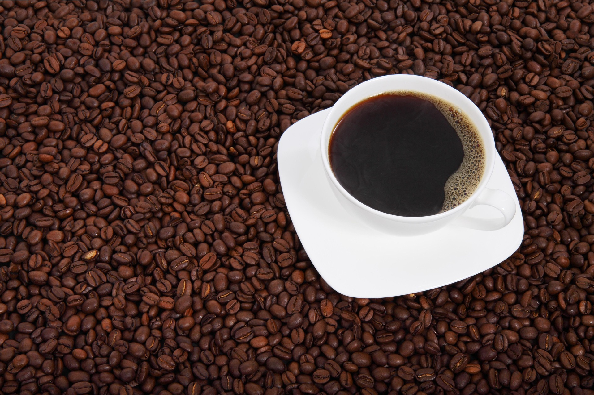

We're Going on an adventure!
Before we leave the comfort of home, every traveler needs a warm cup of coffee,
a packed snack, and a little courage for the road ahead.
Before we embark, consider the following:
- ☕ Visit the Village Roaster Before First Light
- 🗺️ Consult the Weathered Map Board
- 🍞 Pack a Proper Second Breakfast
- ✨ Return with a Good Story

🌿 Pack a warm cloak and your favorite coffee mug
How to Brew a Proper Adventurer Coffee Before Setting Out on an Adventure
-
Gather Your Ingredients
- Freshly roasted coffee beans
- Clean spring water
- Cream and a spoonful of honey
- Brew a Warm and Comforting Cup
- Enjoy Your Coffee Before Leaving Home
Before setting out on an adventure, gather around the table,
tap your feet to the fiddle, and enjoy a cheerful tunes.
The mugs are full, the stories are flowing, and the road awaits.
Are you ready?